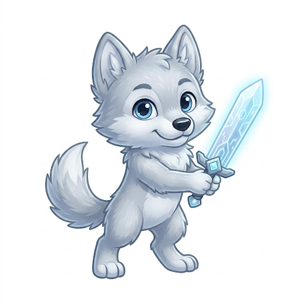

Farzandingiz maktabga yetdi — siz buni darhol bilasiz.
Qalqon AI farzandingiz qayerdaligini ko'rsatadi, uyga va maktabga kirib-chiqqanida xabar beradi, xavf bo'lsa bir tugma bilan SOS yuboradi. Yashirin kuzatuv emas — farzand bilan ochiq kelishuv.

Uch qadamda tayyor
Hech qanday murakkab sozlash yo'q. O'rtacha 5 daqiqa.
Botni oching
Telegramda @qalqon_aibot ga kiring va ro'yxatdan o'ting — parol shart emas.
Farzandni ulang
Bot bir martalik kod beradi. Farzand telefoniga Qalqon ilovasini o'rnatib, kodni kiritadi.
Uy va maktabni belgilang
Xaritada ikki nuqtani tanlang — kirib-chiqqanida xabar Telegramingizga keladi.
Kundalik xotirjamlik uchun
Har bir imkoniyat bitta savolga javob beradi: "Farzandim hozir yaxshimi?"
Maktabga yetdi, uyga qaytdi
Uy, maktab, to'garak — belgilangan hududga kirganda va chiqqanda xabar.
Xarita va kun marshruti
Hozir qayerda va bugun qayerlarda bo'lgani — o'lchangan vaqti bilan.
Bir tugmada SOS
"Olib keting", "Maktabdaman" yoki SOS — joylashuvi bilan darhol sizga.
Ota va ona birga YANGI
Onani bitta havola bilan qo'shing — xabarlar ikkalangizga ham keladi.
Ekran vaqti
Qaysi ilovada qancha vaqt o'tdi — ta'qiqlash emas, muvozanat haqida suhbat uchun.
AI repetitor
1–11-sinf darsliklari bo'yicha yordam: tayyor javob emas, o'zi topishga yo'naltiradi.
Ishonch — kuzatuvdan muhimroq
Farzand ilova borligini biladi va nima yuborilayotganini ko'radi. Shunday bo'lgani uchun u ilovani o'chirib qo'yishga urinmaydi.
Nima qilamiz
- Joylashuvni faqat oilangizga ko'rsatamiz
- Farzandga qaysi ma'lumot ketayotganini ko'rsatamiz
- Hisobni bir bosishda butunlay o'chirish imkonini beramiz
Nima qilmaymiz
- Yozishmalarni o'qimaymiz, ekranni yozmaymiz
- Mikrofon va kamerani ishlatmaymiz, ikonkani yashirmaymiz
- Ma'lumotni hech kimga sotmaymiz
Ko'p beriladigan savollar
Bu pullikmi?
Boshlash bepul. Bepul tarifda bitta farzandni kuzatish va asosiy xabarlar ishlaydi. Pro tarif uzoqroq jonli kuzatuv va 30 kunlik yo'l tarixini qo'shadi.
Farzandimning telefoni iPhone bo'lsa-chi?
Hozircha farzand ilovasi Android uchun. iPhone'da farzand Telegram orqali jonli joylashuvini ulashishi mumkin — bot uni ham qabul qiladi.
Bino ichida joylashuv noaniq bo'lmaydimi?
Bino ichida telefon GPS'ni yo'qotadi va xato 100–200 metrgacha oshadi. Qalqon buni hisobga oladi: noaniq o'lchovdan yolg'on "chiqdi" xabarini bermaydi, kirishni esa ketma-ket o'lchovlar bilan tasdiqlaydi.
Ma'lumotlarim qayerda saqlanadi?
Himoyalangan serverda, faqat sizning oilangiz uchun. Batafsil — maxfiylik siyosatida.
Bugun boshlang — ertalab xotirjam bo'ling
Botni oching, farzandni ulang va ertaga birinchi "maktabga yetdi" xabarini oling.
✈️ @qalqon_aibot ni ochish